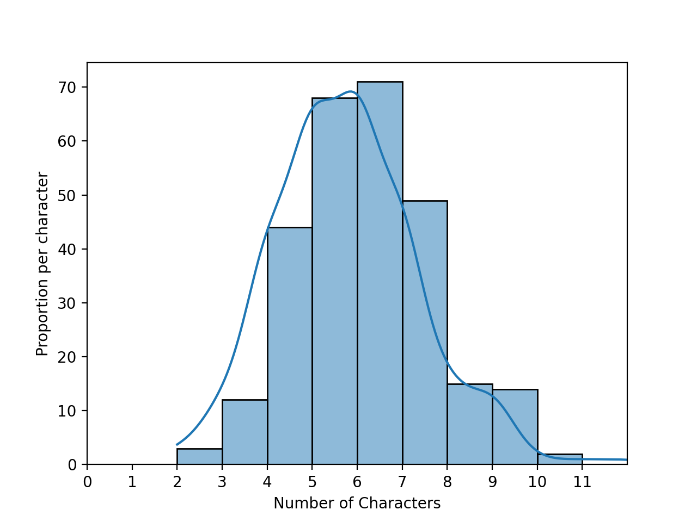
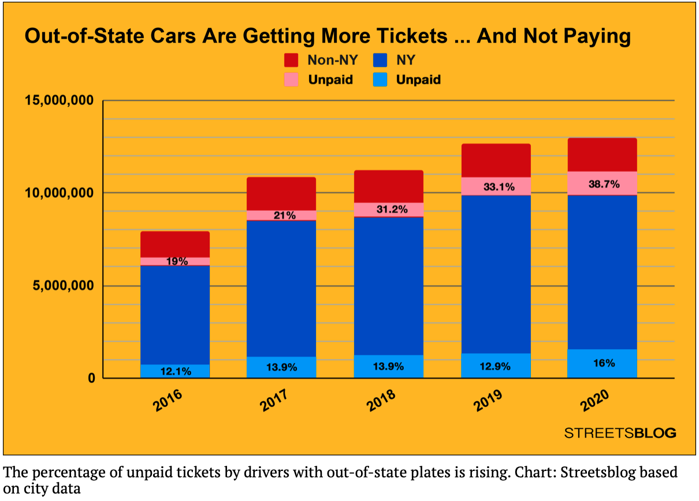
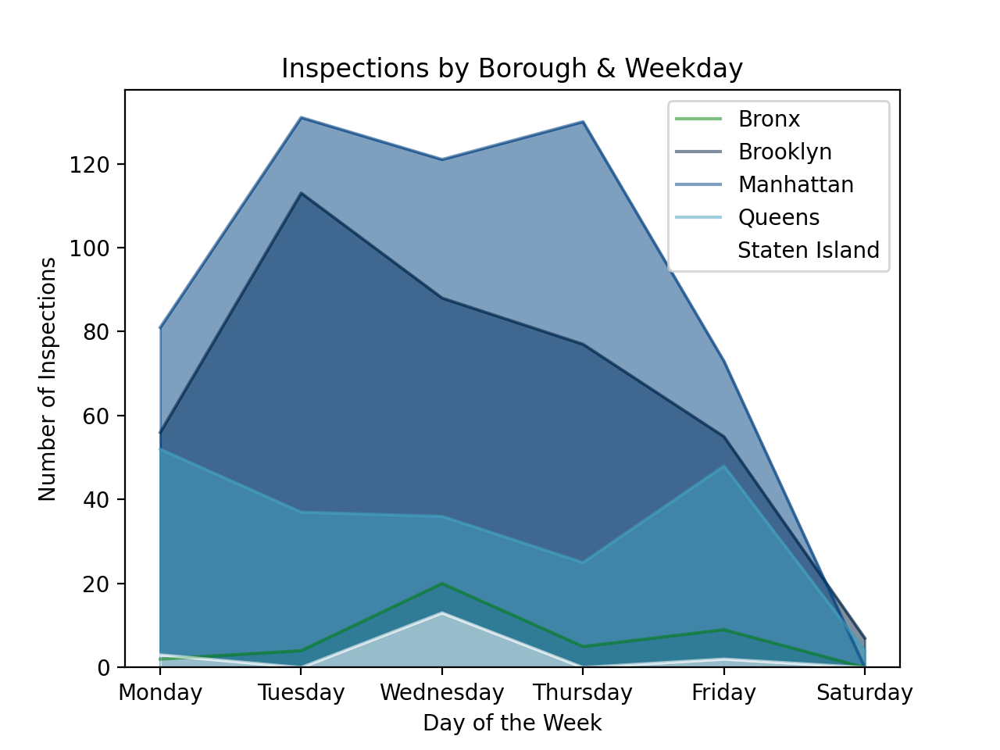

Unless otherwise noted, classwork is submitted via Gradescope. Access information is given during the corresponding lecture.
Due to the internet issues in the lecture hall, for Classwork 2 onward, the classwork will be available until midnight. If you attended class that day, there is an option to earn 0.5 points for attendance and space to include the row and seat number. If you were not able to attend a given lecture, you can still work through the classwork at home and we will replace the fractional point for that classwork with the grade you earned on the final exam. Do not say you were in the room if you did not attend.
Classwork 0: Due midnight, Monday, 31 January.
Available on Gradescope, this classwork focuses on the course
syllabus.
If you do have access to the course on Gradescope, write to datasci@hunter.cuny.edu. Include in your email that you not receive a Gradescope invitation, your preferred email, and we will manually generate an invitation.
Classwork 1: Due 4pm, Monday, 31 January.
Available during Lecture 1 on Gradescope (paper version also available for those without a phone or laptop at lecture), this classwork complements the exploratory data analysis of names and foreshadows the sampling of data in Lecture 2.
Classwork 2: Due midnight, Thursday, 3 February.
Available during Lecture 2 on Gradescope, this classwork introduces the autograder that is used for the programming assignments. The structure of the sample program mirrors the structure and content of the upcoming Program 1. To get the most out of this exercise, bring a laptop with you to lecture with a development environment (IDE) that has Python 3+ to work through in lecture. Write a function that takes the name of a file and makes a dictionary of the lines of the file.
For example, assuming these functions are in a file, Another example with nick_names.txt:
If you attended lecture, include the last three lines to the the introductory comment:
Classwork 3: Due midnight, Monday, 7 February.
Available during Lecture 3 on Gradescope, this classwork asks that you write a program using Pandas and its file I/O. To get the most out of this exercise, bring a laptop with you to lecture with a development environment (IDE) that has Python 3+ to work through in lecture.
Write a program that asks the user for the name of an input CSV file and the name of an output CSV file. The program should open the file name provided by the user.
Next, the program should select rows where the field
Then a sample run of the program:
Hints:
Classwork 4: Due midnight, Thursday, 10 February.
Available during Lecture 4 on HackerRank, this classwork introduces the timed coding environment used for quizzes. This classwork mirrors the structure and content of the upcoming Quiz 1.
To get the most out of this exercise, bring an electronic device on which you can easily type into a web-based IDE (possible on a phone, but much easier with the bigger screen and keyboards on some tablets and most laptops.
Classwork 5: Due midnight, Monday, 14 February.
Available during Lecture 5 on Gradescope, this classwork focuses on the structure and topics for the optional project, based on the project overview in lecture.
Classwork 6: Due midnight, Thursday, 17 February.
Available during Lecture 6 on Gradescope, this on-line assignment reviews the different ways to merge DataFrames in Pandas.
Classwork 7: Due midnight, Thursday, 24 February.
Available during Lecture 7 on Gradescope, this classwork introduces regular expressions for data cleaning. To get the most out of this exercise, bring a laptop with you to lecture with a development environment (IDE) that has Python 3+ to work through in lecture.
Write a program that asks the user for the name of an input HTML file and the name of an output CSV file. Your program should use regular expressions (see Chapter 12.4 for using the For example, if the input file is:
Quiz 1: Core Python Due 4pm, Friday, 11 February.
Link to access HackerRank available at the end of Lecture 4 (posted on Blackboard).
Quiz 2: Pandas Basics Due 4pm, Friday, 18 February.
Link to access HackerRank available at the end of Lecture 6 (posted on Blackboard).
Quiz 3: Aggregating in Pandas Due 4pm, Friday, 25 February.
Link to access HackerRank available at the end of Lecture 7 (posted on Blackboard).
Quiz 4: Datetime Due 4pm, Friday, 4 March.
Link to access HackerRank available at the end of Lecture 9 (posted on Blackboard).
Quiz 5: Regular Expressions Due 4pm, Friday, 4 March.
Link to access HackerRank available at the end of Lecture 11 (posted on Blackboard).
All students registered by Monday, 26 January are sent a registration invitation to the email on record on their Blackboard account. If you did not receive the email or would like to use a different account, write to To encourage starting early on programs, bonus points are given for early submission. A point a day, up to a total of 3 bonus points (10% of the program grade), are possible. The points are prorated by hour. For example, if you turn in the program 36 hours early, then the bonus poins are: (36 hours/3 days)*3 points = (36 hours/72 hours)*3 points = 1.5 points.
To get full credit for a program, the file must include in the opening comment:
Program 1: Popular Names. Due noon, Thursday, 10 February.
In lecture and Chapter 1 of the textbook, we looked at first names for students taking data science at UC Berkeley as well as the baby names data set from the Social Security Administration. We explored properties such as the lengths of names:

For this program, we will focus on the most common names in a given file, as well the names that make up a fixed fraction of the names. To allow for unit testing, the assignment is broken into the following functions: For example, assuming these functions are in a file, Another example with a file korea_most_pop2019.txt, containing the most popular names in South Korea in 2019, separated by both newlines and spaces:
Notes: you should submit a file with only the standard comments at the top, and these functions. The grading scripts will then import the file for testing and expect the functions to match in name and return values to above:
Program 2: Parking Tickets. Due noon, Thursday, 17 February.
Recent news articles focused on the significantly higher percentage of parking tickets that are unpaid for cars with out-of-state plates:

The data is aggregated across the whole city. Does the same occur when the datasets are focused on individual neighborhoods? To answer that question, as well as what are the most common reasons for tickets, we will use the parking ticket data from OpenData NYC. In Lecture 3, we started data cleaning efforts on the parking ticket data. We will continue the data cleaning efforts for this program, as well as introduce auxiliary files that link the codes stored with a short explanation of the violation. The assignment is broken into the following functions to allow for unit testing:
For example, assuming your functions are in the Looking at the registration types ( And for the Precinct District 19 dataset that contains almost a half million tickets:
Note: you should submit a file with only the standard comments at the top, this function, and any helper functions you have written. The grading scripts will then import the file for testing.
If your file includes code outside of functions, either comment the code out before submitting or use a main function that is conditionally executed (see Think CS: Section 6.8 for details).
Program 3: Restaurant Rankings. Due noon, Thursday, 24 February.
The NYC Department of Health & Mental Health regularly inspects restaurants and releases the results:
These results are also available in CSV files at
https://data.cityofnewyork.us/Health/DOHMH-New-York-City-Restaurant-Inspection-Results/43nn-pn8j. This programming assignment focuses on predicting letter grades for restaurants, yet to be graded, as well computing summary statistics by neighborhood.
The assignment is broken into the following functions to allow for unit testing:
For example, assuming your functions are in the Using the We can use the numeric grade to compute the averages for neighborhoods for both provided and predicted scores:
To make it easier to find scores for neighborhoods we combine with the NTA table:
Hints:
Program 4: Restaurant Cleaning. Due noon, Thursday, 3 March.
This program continues with the Restaurant Inspection Data Set, and uses regular expressions (covered in Lecture 7 & DS 100: Sections 13.2-3) to clean restaurant inspection datasets for later use.
The assignment is broken into the following functions to allow for unit testing:
For example, if the file was restaurants30July.csv with the first 3 lines of:
We can apply the next three functions to clean up the data:
The next function computes the time between the inspection and the grade being reported:
Looking at a larger data set (inspections of Coffee/Tea establishments in 2021), we can see what are the most common day for inspections, by boroughs:

The code to generate this is:
Program 5: . Due noon, Thursday, 10 March.
This program applies regular expressions
(covered in Lecture 7 & DS 100: Sections 13.2-3) to parse information from Python logs.
The assignment is broken into the following functions to allow for unit testing:
Program 6: Housing Units. Due noon, Thursday, 17 March.
NYC Department of City Planning (DCP) Housing Database contains all approved construction and demolition jobs since 2010. Summary information about it are provided via OpenData NYC. A summary, recorded as net housing units, by Neighborhood Tabulation Areas:
This program focuses on the growth of neighborhoods, as witnessed by the net increase in housing units, and explore what factors are most correlated with the increase.
The assignment is broken into the following functions to allow for unit testing:
The grade for the project is a combination of grades earned on the milestones (e.g. deadlines during the semester to keep the projects on track) and the overall submitted program. If you choose not to complete the project, your final exam grade will replace its portion of the overall grade.
Note: Hunter College is committed to all students having the technology needed for their courses. If you are in need of technology, see
Student Life's Support & Resources Page.
make_dict(file_name, sep=': '): Takes a name of a file, file_name and a delimiter sep. The default value is ': '. If a line of the file does not include sep, the line should be ignored. Otherwise, for each line, the string preceding the delimiter sep is the key, and the string after sep is the value. Your function returns the dictionary.
cw2.py and run on a file containing names that start with 'A', contacts.txt:
will print:
contacts = cw2.make_dict('contacts.txt')
who = 'CS Department'
print(f'Contact info for {who} is {contacts[who]}.')Contact info for CS Department is 10th Floor HN, x5213.
will print:
nick_names = cw2.make_dict('nick_names.txt', sep = ' ')
names = ['Beth','Lisa','Meg','Greta','Amy','Mia']
for n in names:
print(f'Full name for {n} is {nick_names[n]}.')Full name for Beth is Elizabeth.
Full name for Lisa is Elizabeth.
Full name for Meg is Margaret.
Full name for Greta is Margaret.
Full name for Amy is Amelia.
Full name for Mia is Amelia.
If you did not attend lecture, do not include the above lines.
"""
Name: YOUR_NAME
Email: YOUR_EMAIL
Resources: RESOURCES USED
I attended lecture today.
Row: YOUR_ROW
Seat: YOUR_SEAT
"""
Grade is equal to 3 and the Year is equal to 2019 and write all rows that match that criteria to a new CSV file.
where the file Enter input file name: school-ela-results-2013-2019.csv
Enter output file name: ela2013.csvschool-ela-results-2013-2019.csv is extracted from NYC Schools Test Results (and truncated version of roughly the first 1000 lines for testing). The first lines of the output file would be:
School,Name,Grade,Year,Category,Number Tested,Mean Scale Score,# Level 1,% Level 1,# Level 2,% Level 2,# Level 3,% Level 3,# Level 4,% Level 4,# Level 3+4,% Level 3+4
01M015,P.S. 015 ROBERTO CLEMENTE,3,2019,All Students,27,606,1,3.7,7,25.9,18,66.7,1,3.7,19,70.4
01M019, P.S. 019 ASHER LEVY,3,2019,All Students,24,606,0,0.0,8,33.3,15,62.5,1,4.2,16,66.7
01M020,P.S. 020 ANNA SILVER,3,2019,All Students,57,593,13,22.8,24,42.1,18,31.6,2,3.5,20,35.1
Grade column contains a mixtures of numbers (e.g. 3) and strings ("All Grades"), the column is stored as strings.
Note: Hunter College is committed to all students having the technology needed for their courses. If you are in need of technology, see
Student Life's Support & Resources Page.
re package in Python) to find all links in the input file and store the link text and URL as columns: Title and URL in the CSV file specified by the user. For the URL, strip off the leading https:// or http:// and any trailing slashes (/):
Then a sample run of the program:
<html>
<head><title>Simple HTML File</title></head>
<body>
<p> Here's a link for <a href="http://www.hunter.cuny.edu/csci">Hunter CS Department</a>
and for <a href="https://stjohn.github.io/teaching/data/fall21/index.html">CSci 39542</a>. </p>
<p> And for <a href="https://www.google.com/">google</a>
</body>
</html>
And the Enter input file name: simple.html
Enter output file name: links.csvlinks.csv would be:
Title,URL
Hunter CS Department,www.hunter.cuny.edu/csci
CSci 39542,stjohn.github.io/teaching/data/fall21/index.html
google,www.google.com
Quizzes
Unless otherwise noted, quizzes focus on the corresponding programming assignment. The quizzes are 30 minutes long and cannot be repeated. They are available for the 24 hours after lecture and assess your programming skill using HackerRank. Access information for each quiz will be available under the Quizzes menu on Blackboard.
This first coding challenge focuses on reading and processing data from a file using core Python 3.6+ as in Program 1.
This is the quiz using Pandas and focuses on manipulating and creating new columns in DataFrames as in Program 2.
This is the quiz focuses on aggegrating in Pandas as in Program 3.
This is the quiz focuses on aggegrating in Pandas as in Program 4.
This is the quiz focuses on regular expressions in Python as in Program 5.
Homework
Unless otherwise noted, programs are submitted on the course's Gradescope site and are written in Python. The autograders expect a .py file and do not accept iPython notebooks.
Also, to receive full credit, the code should be compatible with Python 3.6 (the default for the Gradescope autograders).
datasci@hunter.cuny.edu. Include in your email that you not receive a Gradescope invitation, your preferred email, and we will manually generate an invitation. As a default, we use your name as it appears in Blackboard/CUNYFirst (to update CUNYFirst, see changing your personal information). If you prefer a different name for Gradescope, include it, and we will update the Gradescope registration.
For example, for the student, Thomas Hunter, the opening comment of his first program might be:
and then followed by his Python program.
"""
Name: Thomas Hunter
Email: thomas.hunter.1870@hunter.cuny.edu
Resources: Used python.org as a reminder of Python 3 print statements.
"""
Learning Objective: to build competency with string and file I/O functionality of core Python.
Available Libraries: Core Python 3.6+ only.
extract_names(file_name, sep = ["\n"]): Returns a list of names. Assumes that the names are separated by the separators listed in sep. The default value is ["\n"] but the possible inputs are 1 or more separators. Your function should remove any empty strings from the list.
count_names(names_lst):
Returns a dictionary of names with values the number of times each name occurs in the input, names_lst.
popular_names(names_dict,num = 3):
Returns a list of the num most popular names as a list of strings. If no value is passed for num, the default value of 3 is used (that is, it returns the 3 most popular names).
percent_captured(names_dict,threshold = 75):
Returns the number of names needed to have at least threshold percent of all the names in the dictionary. If no value is passed for percent, the default value of 75 is used (that is, it returns the number of names needed to have 75 percent (or more) of the total occurrances of names).
p1.py and run on a file containing names that start with 'A', a_names.txt:
gives the output:
lst = p1.extract_names('a_names.txt')
print(f'The list is:\n{lst}')
dict = p1.count_names(lst)
print(f'The dictionary is:\n{dict}')
lstTop = p1.popular_names(dict)
print(f'The top 3 names are: {lstTop}.')
num = p1.percent_captured(dict, threshold = 50)
print(f'The top {num} names make up 50% of the list.')
The list is:
['Alex', 'Andy', 'Amy', 'Alani', 'Alex', 'Ana', 'Angela', 'Ai', 'Asia', 'Alex', 'Anna', 'Ana', 'Asami', 'Andrea', 'Alex', 'Ana', 'Anya', 'Aiko', 'Ana', 'Angela', 'Ai', 'Alexander', 'Alex', 'Ana', 'Andy']
The dictionary is:
{'Alex': 5, 'Andy': 2, 'Amy': 1, 'Alani': 1, 'Ana': 5, 'Angela': 2, 'Ai': 2, 'Asia': 1, 'Anna': 1, 'Asami': 1, 'Andrea': 1, 'Anya': 1, 'Aiko': 1, 'Alexander': 1}
The top 3 names are: ['Alex', 'Ana', 'Andy'].
The top 4 names make up 50% of the list.
gives the output:
lst = p1.extract_names('korea_most_pop2019.txt',sep=["\n"," "])
print(lst)
['Ji-an', 'Ha-yoon', 'Seo-ah', 'Ha-eun', 'Seo-yun', 'Ha-rin', 'Ji-yoo', 'Ji-woo', 'Soo-ah', 'Ji-a', 'Seo-jun', 'Ha-joon', 'Do-yun', 'Eun-woo', 'Si-woo', 'Ji-ho', 'Ye-jun', 'Yu-jun', 'Ju-won', 'Min-jun']
If your file includes code outside of these functions, either comment the code out before submitting or use a main function that is conditionally executed (see Think CS: Section 6.8 for details).
"""
Name: YOUR NAME
Email: YOUR EMAIL
Resources: RESOURCES USED
"""
def extract_names(file_name, sep = ["\n"]):
"""
Opens and reads from file_name, and returns a list of names.
Keyword arguments:
sep -- the deliminators for splitting up the data (default ['\n'])
"""
#Placeholder-- replace with your code
lst = []
return lst
def count_names(names_lst):
"""
Returns a dictionary of names with values the number of times
each name occurs in the input, names_lst.
"""
#Placeholder-- replace with your code
dict = {}
return dict
def popular_names(names_dict,num = 3):
"""
Returns a list of the num most popular names as a list of strings.
Keyword arguments:
sep -- the number of names to return (default is 3)
"""
#Placeholder-- replace with your code
lst = []
return lst
def percent_captured(names_dict,threshold = 75):
"""
Returns the number of names needed to have at least threshold percent of
all the names in the dictionary.
Keyword arguments:
threshold -- the percent used for threshold (default 75)
"""
#Placeholder-- replace with your code
count = 0
return count
Learning Objective: to refresh students' knowledge of Pandas' functionality to manipulate and create columns from formatted data.
Available Libraries: Pandas and core Python 3.6+.
make_df(file_name):
This function takes one input:
The function should open the file file_name: the name of a CSV file containing Parking Ticket Data from OpenData NYC.
file_name as DataFrame, drop all but the columns:
and return the resulting DataFrame.
Summons Number,Plate ID,Registration State,Plate Type,Issue Date,Violation Code,Violation Time,
Violation In Front Of Or Opposite,House Number,Street Name,Vehicle Color
filter_reg(df, keep = ["COM", "PAS"]):
This function takes two inputs:
The function returns the DataFrame with only rows that have df: a DataFrame that
including the Plate Type column.
keep: a list of values for the
Plate Type column.
The default value is ["COM", "PAS"].
Plate Type with a value from the list keep. All rows where the Plate Type column contains a different value are dropped.
add_indicator(reg_state):
This function takes one input:
The function should return reg_state: a string containing the state of registation.
1 when reg_state is in ["NY","NJ","CT"] and 0 otherwise.
find_tickets(df, plate_id):
This function takes two inputs:
returns, as a list, the df: a DataFrame that
including the Plate ID column.
plate_id: a string containing a license plate (combination of letters, numbers and spaces).
Violation Code for all tickets issued to that plate_id. If that plate_id has no tickets in the DataFrame, then an empty list is returned.
make_dict(file_name, skip_rows = 1):
This function takes two inputs:
Make a dictionary from a text file named file_name: a string containing the name of a file.
skip_rows: the number of rows to skip at the beginning of file.
The default value is 1.
file_name, where each line, after those that are skipped, makes a dictionary entry. The key for each entry is the string upto the first comma (',') and the value is the string between the first and second commas. All characters after the second comma on a line are ignored.
p2.py:
will print:
df = p2.make_df('Parking_Violations_Issued_Precinct_19_2021.csv')
print(df)
Note that all the rows are included (451,509) but that only the 11 specified columns are retained in the DataFrame.
Summons Number Plate ID ... Street Name Vehicle Color
0 1474094223 KDT3875 ... E 75 BLACK
1 1474094600 GTW5034 ... EAST 70 STREET BK
2 1474116280 HXM6089 ... E 72 ST BK
3 1474116310 HRW4832 ... E 72 ST GRY
4 1474143209 JPR6583 ... EAST 94 STREET BLACK
... ... ... ... ... ...
451504 8954357854 JRF3892 ... 5th Ave GR
451505 8955665040 199VP4 ... E 74th St BLACK
451506 8955665064 196WL7 ... E 78th St BLACK
451507 8970451729 CNK4113 ... York Ave GY
451508 8998400418 XJWV98 ... York Ave WHITE
[451509 rows x 11 columns]Plate Type):
prints many different types of registrations and abbreviations:
print(f"Registration: {df['Plate Type'].unique()}")
print(f"\n10 Most Common: {df['Plate Type'].value_counts()[:10]}")
The two registration types that are the most common:
Registration: ['PAS' 'SRF' 'OMS' 'COM' '999' 'SPO' 'OMT' 'MOT' 'RGL' 'PHS' 'MED' 'TRC'
'APP' 'SRN' 'OML' 'ITP' 'CMB' 'ORG' 'AMB' 'DLR' 'IRP' 'TOW' 'MCL' 'CBS'
'LMB' 'USC' 'CME' 'RGC' 'VAS' 'ORC' 'HIS' 'STG' 'AGR' 'TRA' 'CHC' 'SOS'
'BOB' 'OMR' 'TRL' 'AGC' 'CSP' 'PSD' 'SPC' 'MCD' 'NLM' 'CMH' 'LMA' 'JCA'
'SCL' 'HAM' 'AYG' 'NYA' 'OMV']
10 Most Common: PAS 262875
COM 168827
SRF 2834
APP 2800
OMT 2603
OMS 2464
MED 1433
999 1352
CMB 1208
LMB 1135
Name: Plate Type, dtype: int64count = len(df)
pasCount = len(df[df['Plate Type'] == 'PAS'])
comCount = len(df[df['Plate Type'] == 'COM'])
print(f'{count} different vehicles, {100*(pasCount+comCount)/count} percent are passenger or commercial plates.')
Our function will filter for just passenger and commercial plates:
451509 different vehicles, 95.61315499801776 percent are passenger or commercial plates.
will print:
dff = p2.filter_reg(df)
print(f'The length of the filtered data frame is {len(dff)}.')
By specifying different registration types with the keyword argument, we can filter for other registration (DMV's Registration Types) such as motocycles:
The length of the filtered data frame is 431702.
will print:
df2 = p2.filter_reg(df,keep=['MOT','HSM','LMA','LMB'])
print(f'The length of the filtered data frame is {len(df2)}.')
Working the the motocycle DataFrame, we can add a column for if the vehicle is registered in New York:
The length of the filtered data frame is 2095.
will print:
df2['NYPlates'] = df2['Registration State'].apply(p2.add_indicator)
print(df2.head())
We can also look up the tickets that were given, by Summons Number Plate ID ... Vehicle Color NYPlates
3888 8778381423 MD677M ... SILVE 1
5967 1475041184 92BF34 ... BLK 1
6177 1477342850 40TZ78 ... RD 1
6985 8514394770 16UD95 ... BLACK 1
7221 8624098440 77BD79 ... BLACK 1Plate ID and use the dictionary of the violation code to find out what the tickets were for:
will print:
print(f'Motorcycles with most tickets:\n {df2["Plate ID"].value_counts()[:5]}')
code_lookup = p2.make_dict('ticket_codes.csv')
ticket_codes = p2.find_tickets(df2,'19UB23')
descrip = [code_lookup[str(t)] for t in ticket_codes]
print(f'The motocycle with plate 19UB23 got the following tickets: {descrip}')Motorcycles with most tickets:
19UB23 14
80BD05 10
38SV33 9
66TZ74 8
70TW50 8
Name: Plate ID, dtype: int64
The motocycle with plate 19UB23 got the following tickets: ['NO PARKING-STREET CLEANING', 'REG. STICKER-EXPIRED/MISSING', 'REG. STICKER-EXPIRED/MISSING', 'INSP. STICKER-EXPIRED/MISSING', 'REG. STICKER-EXPIRED/MISSING', 'REG. STICKER-EXPIRED/MISSING', 'REG. STICKER-EXPIRED/MISSING', 'REG. STICKER-EXPIRED/MISSING', 'INSP. STICKER-EXPIRED/MISSING', 'REG. STICKER-EXPIRED/MISSING', 'REG. STICKER-EXPIRED/MISSING', 'REG. STICKER-EXPIRED/MISSING', 'REG. STICKER-EXPIRED/MISSING', 'REG. STICKER-EXPIRED/MISSING']
sys:1: DtypeWarning: Columns (39) have mixed types.Specify dtype option on import or set low_memory=False.
when reading in the parking ticket data. Pandas tries to infer the data type (dtype) of the columns from the values. Since some columns are a mixture of numeric and character types this can be difficult. If the file is read in with pd.read_csv(file_name, low_memory=False), the entire column is read in and used to determine type.
Learning Objective: students can successfully filter formatted data using standard Pandas operations for selecting and joining data.
Available Libraries: Pandas and core Python 3.6+.
make_insp_df(file_name):
This function takes one input:
The function should open the file file_name: the name of a CSV file containing Restaurant Inspection Data from OpenData NYC.
file_name as DataFrame, keeping only the columns:
If the 'CAMIS', 'DBA', 'BORO', 'BUILDING', 'STREET', 'ZIPCODE', 'SCORE', 'GRADE', 'NTA'SCORE is null for a row, that row should be dropped. The resulting DataFrame is returned.
predict_grade(num_violations):
This function takes one input:
The function should then return the letter grade that corresponds to the number of violation points num_violations: the number of violations points.
num_violations:
(from NYC Department of Health
Restaurant Grading).
grade2num(grade):
This function takes one input:
and returns the grade on a 4.0 scale for grade: a letter grade or null value.
grade = 'A', 'B', or 'C' (i.e. 4.0, 3.0, or 2.0, respectively). If grade is None or some other value,
return None.
make_nta_df(file_name):
This function takes one input:
The function should open the file file_name: the name of a CSV file containing neighborhood tabulation areas (nynta.csv).
file_name as DataFrame, returns a DataFrame
containing only the columns, NTACode and NTAName.
compute_ave_grade(df,col):
This function takes two inputs:
This function returns a DataFrame with two columns, the df: a DataFrame containing Parking Ticket Data from OpenData NYC.
col: the name of a numeric-valued col in the DataFrame.
NTACode and the average of col for each NTA.
neighborhood_grades(ave_df,nta_df):
This function takes two inputs:
This function returns a DataFrame with the neighborhood names (i.e. ave_df: a DataFrame with containing the column 'NTA'
nta_df: a DataFrame with two columns, 'NTACode' and 'NTAName'.
NTAName) and the columns from ave_df. The columns NTA and NTACode should be dropped before returning the DataFrame.
p3.py:
will print:
df = p3.make_insp_df('restaurants1Aug21.csv')
print(df)
Note that all the rows are included (243) but that only the 9 specified columns are retained in the DataFrame. Several rows have null entries for CAMIS DBA BORO ... SCORE GRADE NTA
0 41178124 CAFE 57 Manhattan ... 4.0 A MN15
1 50111450 CASTLE CHICKEN Bronx ... 41.0 N BX29
2 40699339 NICK GARDEN COFFEE SHOP Bronx ... 31.0 NaN BX05
3 41181395 DUNKIN' Brooklyn ... 10.0 A BK25
4 50052976 ZON BAKERY & CAFE Manhattan ... 72.0 NaN MN36
.. ... ... ... ... ... ... ...
240 50052976 ZON BAKERY & CAFE Manhattan ... 72.0 NaN MN36
241 41525768 THE WEST CAFE Brooklyn ... 10.0 A BK73
242 50111132 BUONASERA RESTAURANT PIZZA Brooklyn ... 16.0 N BK30
243 40399672 BAGELS & CREAM CAFE Queens ... 12.0 A QN06
244 50104259 ROYAL COFFEE SHOP Staten Island ... 69.0 N SI22
[243 rows x 9 columns]GRADE (e.g. row 2, 4, and 240) while others have letter grades (such as 'N') that are not on the list of possible grades.
SCORE to compute the likely grade for each inspection, as both a letter and its equivalent on a 4.0 grading scale, yields:
prints many the predicted grade and equivalent numeric grade on the 4.0 scale:
df['NUM'] = df['GRADE'].apply(p3.grade2num)
df['PREDICTED'] = df['SCORE'].apply(p3.predict_grade)
df['PRE NUM'] = df['PREDICTED'].apply(p3.grade2num)
print(df[ ['DBA','SCORE','GRADE','NUM','PREDICTED','PRE NUM'] ]) DBA SCORE GRADE NUM PREDICTED PRE NUM
0 CAFE 57 4.0 A 4.0 A 4.0
1 CASTLE CHICKEN 41.0 N NaN C 2.0
2 NICK GARDEN COFFEE SHOP 31.0 NaN NaN C 2.0
3 DUNKIN' 10.0 A 4.0 A 4.0
4 ZON BAKERY & CAFE 72.0 NaN NaN C 2.0
.. ... ... ... ... ... ...
240 ZON BAKERY & CAFE 72.0 NaN NaN C 2.0
241 THE WEST CAFE 10.0 A 4.0 A 4.0
242 BUONASERA RESTAURANT PIZZA 16.0 N NaN B 3.0
243 BAGELS & CREAM CAFE 12.0 A 4.0 A 4.0
244 ROYAL COFFEE SHOP 69.0 N NaN C 2.0
[243 rows x 6 columns]
The first couple of rows are:
actual_scores = p3.compute_ave_grade(df,'NUM')
predicted_scores = p3.compute_ave_grade(df,'PRE NUM')
scores = actual_scores.join(predicted_scores, on='NTA')
print(scores.head()) NUM PRE NUM
NTA
BK09 4.0 4.000000
BK17 4.0 4.000000
BK25 4.0 4.000000
BK26 NaN 2.000000
BK28 4.0 3.250000
The first couple of rows are:
nta_df = p3.make_nta_df('nynta.csv')
scores_with_nbhd_names = p3.neighborhood_grades(scores,nta_df)
print(scores_with_nbhd_names.head())
Our predicted scores are the same but almost always decrease when we include the predicted grades from the scores reported.
NUM PRE NUM NTAName
0 4.0 4.000000 Brooklyn Heights-Cobble Hill
1 4.0 4.000000 Sheepshead Bay-Gerritsen Beach-Manhattan Beach
2 4.0 4.000000 Homecrest
3 NaN 2.000000 Gravesend
4 4.0 3.250000 Bensonhurst West
sys:1: DtypeWarning: Columns (39) have mixed types.Specify dtype option on import or set low_memory=False.
when reading in the parking ticket data. Pandas tries to infer the data type (dtype) of the columns from the values. Since some columns are a mixture of numeric and character types this can be difficult. If the file is read in with pd.read_csv(file_name, low_memory=False), the entire column is read in and used to determine type.
numeric_only = True.
Learning Objective: to use regular expressions (pattern matching) with simple patterns to filter data from files.
Available Libraries: Regular expressions (re), timedate, pandas, and core Python 3.6+.
make_insp_df(file_name):
This function takes one input:
The function should open the file file_name: the name of a CSV file containing Restaurant Inspection Data from OpenData NYC.
file_name as DataFrame, keeping only the columns:
If the 'CAMIS', 'DBA', 'BORO', 'PHONE', 'CUISINE DESCRIPTION', 'INSPECTION DATE', 'RECORD DATE', 'GRADE'GRADE is null for a row, that row should be dropped. The resulting DataFrame is returned.
clean_phone(phone_str):
This function takes one input:
If date_str: a string containing a phone number.
date_str is a 10 digit number, NNNNNNNNNN, return the number formatted with parenthesis and dashes: (NNN)-NNN-NNNN. If date_str does not contain a 10 digit number, return None.
convert_dates(df):
This function takes one input:
The function converts the columns, the columns df: a DataFrame containing the columns INSPECTION DATE and RECORD DATE.
INSPECTION DATE and RECORD DATE which are read in as strings to datetime object (hint: you may need to use a format string when converting) and returns the resulting DataFrame.
insp_day_of_week(insp):
This function takes one input:
The function should then return the number corresponding to the day of the week of the inspection: 0 for Monday, 1 for Tuesday, ... 6 for Sunday. If the date is January 1, 1900, then the establishment has not yet had an inspection, and your function should return insp: a datetime object.
None.
days_since(insp_date, record_date):
This function takes two input:
If insp_date: a datetime object.
record_date_str: a datetime object.
insp_date is January 1, 1900, then the establishment has not yet had an inspection, and your function should return None.
If either input is None, you should return None.
Otherwise, return an integer representing the number of days between insp_date and record_date.
group_df(df,categories=['INSP DAY','BORO']):
This function takes two inputs:
This function groups by the categories (using df: a DataFrame containing the columns categories.
categories: a list of column names in df.
.size() to aggregate) and returns the result as a DataFrame (i.e. applies .to_frame() before returning).
Then a sample run of the program:
CAMIS,DBA,BORO,BUILDING,STREET,ZIPCODE,PHONE,CUISINE DESCRIPTION,INSPECTION DATE,ACTION,VIOLATION CODE,VIOLATION DESCRIPTION,CRITICAL FLAG,SCORE,GRADE,GRADE DATE,RECORD DATE,INSPECTION TYPE,Latitude,Longitude,Community Board,Council District,Census Tract,BIN,BBL,NTA
41178124,CAFE 57,Manhattan,300,WEST 57 STREET,10019,2126492729,American,7/30/2021,Violations were cited in the following area(s).,09C,Food contact surface not properly maintained.,Not Critical,4,A,7/30/2021,8/1/2021,Cycle Inspection / Initial Inspection,40.76643902,-73.98332508,104,3,13900,1025451,1010477502,MN15
50111450,CASTLE CHICKEN,Bronx,5987A,BROADWAY,10471,9178562047,Chicken,7/30/2021,Violations were cited in the following area(s).,05D,Hand washing facility not provided in or near food preparation area and toilet room. Hot and cold running water at adequate pressure to enable cleanliness of employees not provided at facility. Soap and an acceptable hand-drying device not provided.,Critical,41,N,,8/1/2021,Pre-permit (Operational) / Initial Inspection,40.88993027,-73.89805316,208,11,28500,2084208,2058011033,BX29
40699339,NICK GARDEN COFFEE SHOP,Bronx,2953,WEBSTER AVENUE,10458,7183652277,Coffee/Tea,7/30/2021,Violations were cited in the following area(s).,08A,Facility not vermin proof. Harborage or conditions conducive to attracting vermin to the premises and/or allowing vermin to exist.,Not Critical,31,,,8/1/2021,Cycle Inspection / Initial Inspection,40.86759042,-73.88308647,207,11,41500,2016446,2032800061,BX05
And the first lines would be:
df = p4.make_insp_df('restaurants30July.csv')
print(df.head())
Note that we printed the indices, and some of the initial rows were dropped due to null values.
CAMIS DBA BORO ... INSPECTION DATE RECORD DATE GRADE
0 41178124 CAFE 57 Manhattan ... 7/30/2021 8/1/2021 A
1 50111450 CASTLE CHICKEN Bronx ... 7/30/2021 8/1/2021 N
3 41181395 DUNKIN' Brooklyn ... 7/30/2021 8/1/2021 A
5 50104136 FLATBUSH BAGEL Brooklyn ... 7/30/2021 8/1/2021 N
6 50106274 BURGER IM Brooklyn ... 7/30/2021 8/1/2021 A
[5 rows x 8 columns]
And the first lines of those columns would be:
df = df.assign( PHONE = df['PHONE'].apply(p4.clean_phone) )
df = p4.convert_dates(df)
df['INSP DAY'] = df['INSPECTION DATE'].apply(p4.insp_day_of_week)
print(df[ ['PHONE','INSPECTION DATE','RECORD DATE','INSP DAY'] ].head()) PHONE INSPECTION DATE RECORD DATE INSP DAY
0 (212)-649-2729 2021-07-30 2021-08-01 4
1 (917)-856-2047 2021-07-30 2021-08-01 4
3 (718)-627-2450 2021-07-30 2021-08-01 4
5 (516)-491-5588 2021-07-30 2021-08-01 4
6 (718)-673-6066 2021-07-30 2021-08-01 4
For current restaurant inspection data, if the restaurant passes, a grade is reported on the same day as the inspection:
df['RECORD TIME'] = df.apply(lambda row: p4.days_since(row['INSPECTION DATE'], row['RECORD DATE']),axis=1)
print(df[ ['INSPECTION DATE','RECORD DATE','RECORD TIME'] ].head()) INSPECTION DATE RECORD DATE RECORD TIME
0 2021-07-30 2021-08-01 2
1 2021-07-30 2021-08-01 2
3 2021-07-30 2021-08-01 2
5 2021-07-30 2021-08-01 2
6 2021-07-30 2021-08-01 2
Prints out:
df_day_boro = p4.group_df(df)
print(df_day_boro)
Using DS 100 Chapter 11 and matplotlib.pyplot documentation for customizing plots yields:
INSP DAY BORO
0 Bronx 2
Brooklyn 56
Manhattan 81
Queens 52
Staten Island 3
1 Bronx 4
Brooklyn 113
Manhattan 131
Queens 37
2 Bronx 20
Brooklyn 88
Manhattan 121
Queens 36
Staten Island 13
3 Bronx 5
Brooklyn 77
Manhattan 130
Queens 25
4 Bronx 9
Brooklyn 55
Manhattan 73
Queens 48
Staten Island 2
5 Brooklyn 7
Queens 4
Hints:
import seaborn as sns
import matplotlib.pyplot as plt
df_day_boro.unstack().plot.area(stacked=False,colormap='ocean')
plt.title('Inspections by Borough & Weekday')
plt.xlabel('Day of the Week')
plt.ylabel('Number of Inspections')
plt.xticks([0,1,2,3,4,5],['Monday','Tuesday','Wednesday','Thursday','Friday','Saturday'])
plt.legend(labels=['Bronx','Brooklyn','Manhattan','Queens','Staten Island'])
plt.show()
strptime(date_string, format) can be found at Python Docs, datetime.
Learning Objective: to use regular expressions to parse from log data.
Available Libraries: Regular expressions (re) and core Python 3.6+. (Note: not pandas)
parse_date_from_one_line_log(file_name):
This function takes in a text file containing one line of log and parses out the log date, returning the log date as string.
file_name, the name of a text file which contains one line of log
YYYY-MM-DD
2022-02-22 21:05:13,191 read_data - ERROR:[Errno 2] No such file or directory: 'inputfile_1.txt'
will return:
log_date = parse_date_from_one_line_log('one_liner_log.txt')
print(log_date)2022-02-22
parse_min_max_date_from_one_line_logs(file_name):
This function takes in a text file containing multiple lines of logs and parses out the first and last log date, stored as two string variables.
file_name, the name of a text file which contains multiple lines of log
YYYY-MM-DD
2022-01-22 01:01:11,121 read_data - ERROR:[Errno 2] No such file or directory: 'inputfile.txt'
2022-01-23 01:01:11,121 read_data - ERROR:[Errno 2] No such file or directory: 'inputfile.txt'
2022-01-23 01:01:11,121 read_data - ERROR:[Errno 2] No such file or directory: 'inputfile.txt'
...
will return:
min_log_date, max_log_date = parse_min_max_date_from_one_line_logs('multi_liner_log.txt')
print(min_log_date)
print(max_log_date)2022-01-22
2022-02-14
parse_missing_filename_from_one_line_log(file_name):
This function takes in a text file containing one line of log and parses out the missing filename stored as string
file_name, the name of a text file which contains one line of log
2022-02-22 21:05:13,191 read_data - ERROR:[Errno 2] No such file or directory: 'inputfile_1.txt'
will return:
missing_filename = parse_missing_filename_from_one_line_log('one_liner_log.txt')
print(missing_filename)inputfile_1.txt
parse_filepath_linenum_from_traceback_log(file_name):
For a typical Python traceback, the first line contains the file name, line number, and module name.
The second line contains the actual code that is executed (and subsequently errored out).
This function takes in a text file containing an example of a multi-line Python traceback error and parses out the filepath and line number of the error.
file_name, the name of a text file which contains a single Python traceback error log spanning multiple lines
Traceback (most recent call last):
File "/home/datascience/logs/read_data.py", line 1, in word_count
with open(filename) as f:
FileNotFoundError: [Errno 2] No such file or directory: 'inputfile.txt'
will return:
log_filepath, log_linenum = parse_filepath_linenum_from_traceback_log('traceback_log_simple.txt')
print(log_filepath)
print(log_linenum)/home/datascience/logs/read_data.py
1
parse_last_linenum_from_traceback_log(file_name):
Unlike stack traces in other programming languages, a Python trace back should be read from bottom to top.
In the case where there are multiple errors in a Python trace back log, always look for the most recent call, which is the last line.
This function takes in a text file containing an example of a multi-line Python traceback error and parses out the filepath and line number of the most recent call.
file_name, the name of a text file which contains a multiple Python traceback error logs spanning multiple lines
Traceback (most recent call last):
File "build_model.py", line 52, in build_model
LogisticRegression()
File "clean_data.py", line 40, in create_dummies
create_dummies()
File "clean_data.py", line 22, in read_csv
df = read_csv(filename)
File "data/import_data.py", line 10, in process_data
with open(filename) as f:
FileNotFoundError: [Errno 2] No such file or directory: 'inputfile.txt'
will return:
last_linenum = parse_last_linenum_from_traceback_log('traceback_log_complex.txt')
print(last_linenum)10
Learning Objective: to reinforce Pandas skills by aggregating and cleaning to use in map visualiation, and summary statistics methods in Pandas.
Available Libraries: pandas and core Python 3.6+.
make_housing_df(file_name):
This function takes one input:
The function should open the file file_name: the name of a CSV file containing housing units from OpenData NYC.
file_name as a DataFrame.
If the total is null for a row, that row should be dropped. The column nta2010 should be renamed NTA Code. The resulting DataFrame is returned.
make_pop_df(file_name):
This function takes one input:
The function should open the file file_name: the name of a CSV file containing population counts from OpenData NYC.
file_name as a DataFrame.
Only rows containing data for 2010 should be kept. The resulting DataFrame is returned.
combine_df(housing_df, pop_df, cols):
This function takes three inputs:
Returns a DataFrame that merges the two inputted DataFrames on their common key, housing_df: a DataFrame containing the column NTA Code.
pop_df: a DataFrame containing the column NTA Code.
cols: a list containing a subset of columns of housing_df and pop_df.
NTA Code. The returned DataFrame should include only the columns specified in cols.
compute_density(df, col = 'Density'):
This function takes two inputs:
The function computes a new column, df: a DataFrame containing the columns Population and Shape__Area.
col: a string.
col, that is the quotient of the columns Population and Shape__Area. The resulting DataFrame with this additional column is returned..
most_corr(df, y = 'total', xes = ['Population','Shape__Area','Density','comp2010']):
:
This function takes three inputs:
Returns the column name and Pearson's R correlation coefficient from df: a DataFrame containing the columns listed in y and xes.
xes: list of column names in df.
y: the name of a column in df.
xes that has the highest absolute correlation
with y (i.e. the absolute value of Pearson's R).
convert_std_units(ser):
This function takes one input:
Takes a Series of numeric values and converts to standard units, that is, it computes the mean and standard deviation of ser: a Series.
ser, and for
each s in ser, computes (s - mean)/(standard deviation) and returns the resulting series.
More to come...
Project
A final project is optional for this course.
Projects should synthesize the skills acquired in the course to analyze and visualize data on a topic of your choosing. It is your chance to demonstrate what you have learned, your creativity, and a project that you are passionate about. The intended audience for your project is your classmates as well as tech recruiters and potential employers.
Milestones
The project is broken down into smaller pieces that must be submitted by the deadlines below. For details of each milestone, see the links. The project is worth 20% of the final grade. The point breakdown is listed as well as the submission windows and deadlines. All components of the project are submitted via Gradescope unless other noted.
| Deadline: | Deliverables: | Points: | Submission Window Opens: |
|---|---|---|---|
| Monday, 28 February, noon | Opt-In | 14 February | |
| Monday, 7 March, noon | Proposal | 50 | 1 March |
| Monday, 4 April, noon | Interim Check-In | 25 | 14 March |
| Monday, 25 April, noon | Complete Project & Website | 100 | 5 April |
| Monday, 9 May, noon | Presentation Slides | 25 | 14 April |
| Total Points: | 200 | ||
The window for submitting proposals opens 1 March. If you would like feedback and the opportunity to resubmit for a higher grade, submit early in the window. Feel free to re-submit as many times as you like, up until the assignment deadline. The instructing team will work hard to give feedback on your submission as quickly as possible, and we will grade them in the order they were received.
The proposal is split into the following sections:
The following questions will guide you through some criteria you should be using to assess if the data you have is enough for a successful project.
Hint: Look ahead in the textbook at the chapters on "Linear Modeling" and "Multiple Linear Modeling" for the running examples of models.
Thus, a major part of this final project will center around making the following three types of visualizations with the data you choose. If your data cannot support all three types of visualizations, then please, reconsider choosing another dataset.
More to come...